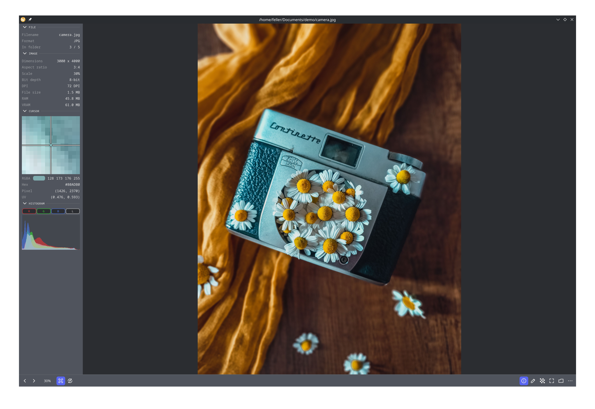
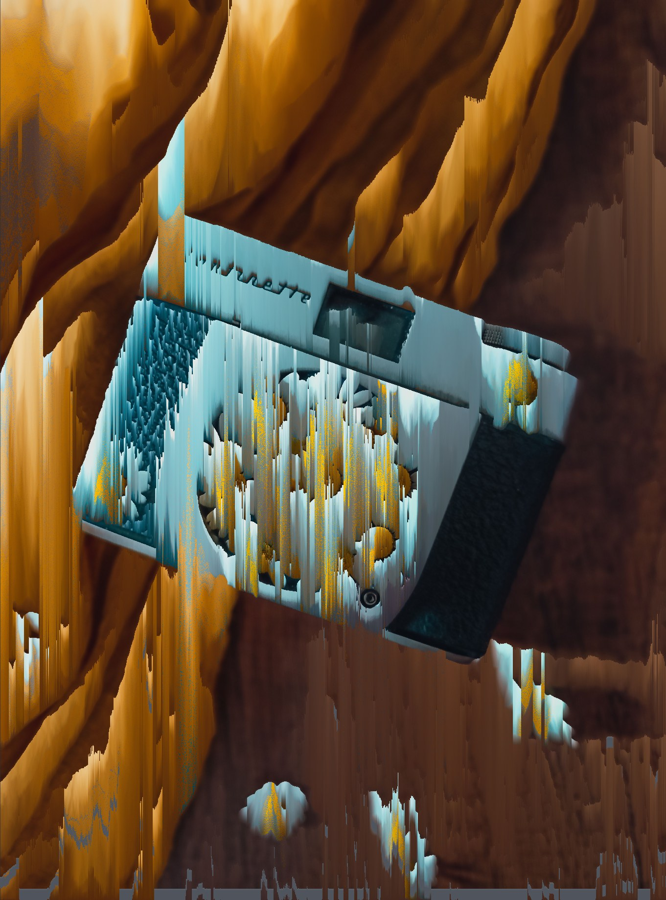

GPU rendering
wgpu + mipmaps. Smooth at any zoom.
83 formats, video, and non-destructive modifiers. Rust + GPU, entirely local.

Stack, reorder, retune. The file is never touched — the preview is what exports.
Drag the handle: pixel sort.

MP4, MKV, WebM with audio and frame stepping. GIF, APNG and WebP scrub the same way.
wgpu + mipmaps. Smooth at any zoom.
Straight onto the canvas.
EXIF, pixel color, histogram.
PNG, JPEG, WebP — everything applied.
22 themes, rebindable keys.
No telemetry. No network.